Para la instalación y configuración de un servidor LAMP en Centos 7 Minimal se siguen los siguientes pasos:
1. Primero actualizamos nuestra máquina virtual para eso utilizamos el comando “yum –y update”.
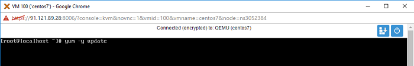
2. Instalamos apache2 quien cumple con la función del servidor web y nos permite la interpretación de las paginas HTML.
3. Iniciamos el servicio con el siguiente comando “systemctl start httpd.service”.
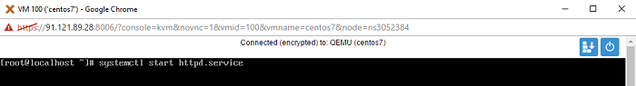
4. Ejecutamos el comando “systemctl enable httpd.service” con el fin de que cada vez que se reinicie la maquina el servicio inicie automáticamente.
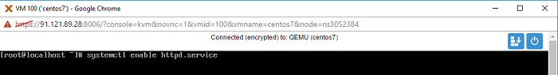
5. Con el comando “systemctl status httpd.service” podemos ver el estado del servidor.
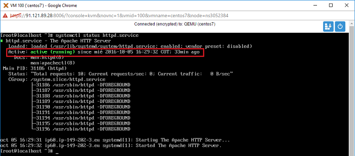
6. Abrimos el navegador y digitamos la IP de nuestro servidor en la barra de navegación en este caso la IP es “149.202.3.60” Si apache ha quedado bien instalado vera el archivo de bienvenida de apache.
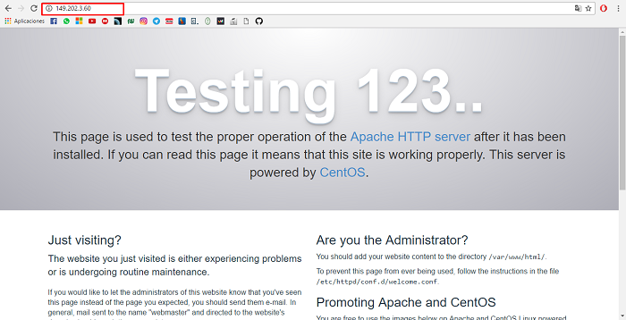
7. Procedemos a realizar la instalación del gestor de bases de datos “MySQL (MariaDB)” , mediante el siguiente comando “yum install mariadb-serve mariadb”.
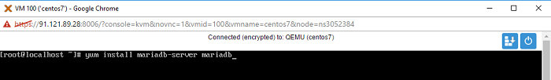
8. Iniciamos el servicio con el siguiente comando “systemctl start mariadb” y verificamos el estado del servicio “systemctl status httpd.service”.
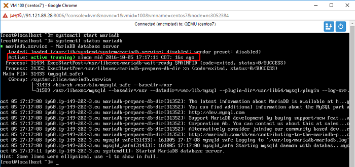
9. Al instalar gestor de base de datos se instala sin una contraseña se puede ver con el siguiente comando “mysql -uroot”.
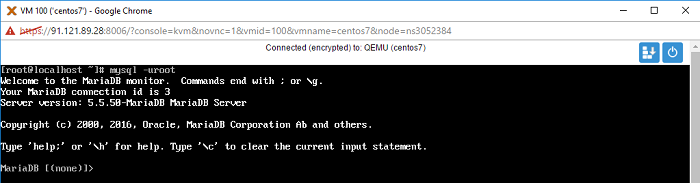
10. Se procede a configura una contraseña al gestor de base de datos para eso se utiliza el siguiente comando “mysql_secure_installation”.
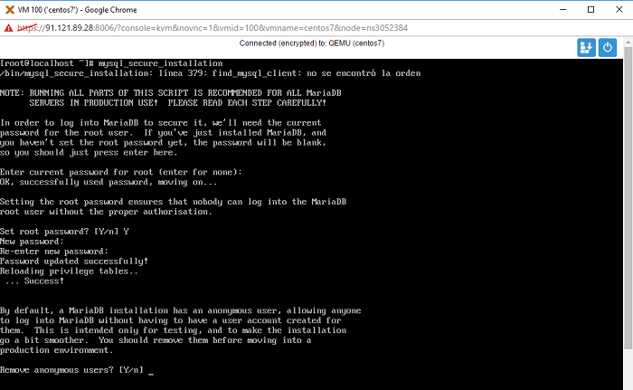
11. Ejecutamos el comando “systemctl enable mariadb.service” con el fin de que cada vez que reiniciemos la maquina el servicio inicie automáticamente.
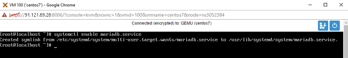
12. Instalamos php7, primero se agrega el repositorio mediante el comando “yum install -y” https://centos7.iuscommunity.org/ius-release.rpm”.
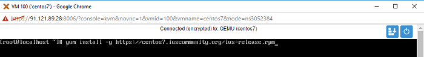
13. Instalar los complementos de PHP 7.
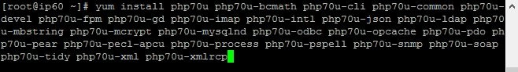
14. Por ultimo para comprobar que PHP ha quedado correctamente instalado en la ruta /home/var/www/html se crea un archivo de en cual debe contener la siguiente estructura.
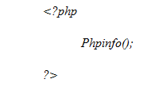
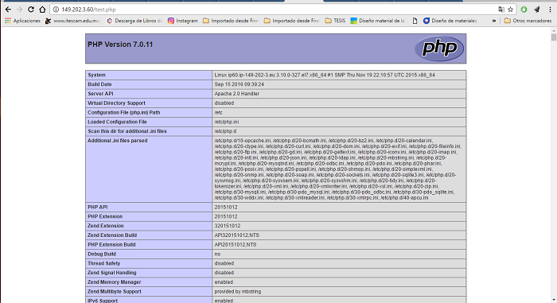
Nota:Si esto sucede hemos culminado de manera correcta la instalación de nuestro servidor LAMP en la máquina de Centos 7 Minimal.